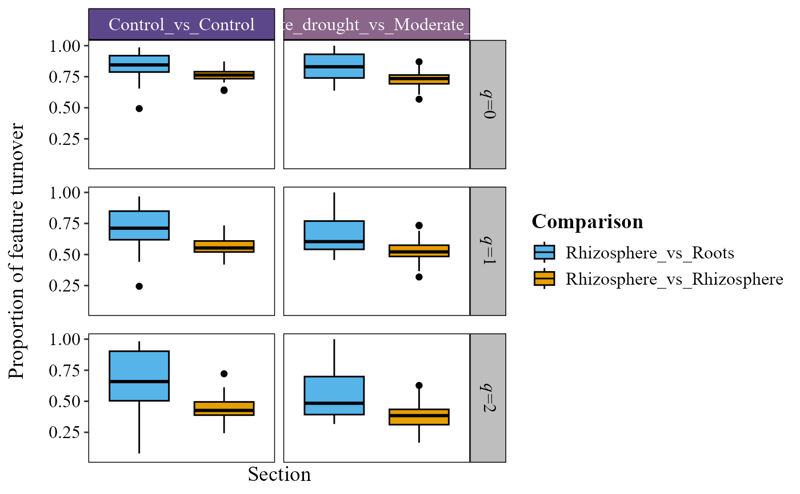

Box plot of pairwise feature turnover (Hill numbers)
Source:R/beta_turnover_plot.R
beta_turnover_plot.RdComputes the pairwise beta diversity between samples with Hill numbers
(q = 0, 1, 2; same values as hillR::hill_taxa_parti_pairwise()) and
plots the proportion of feature turnover (\(\beta - 1\), from 0 = identical
to 1 = no shared features) as box plots, one facet row per Hill order.
q = 0 weighs all features equally (presence/absence), q = 1 weighs them by
their abundance and q = 2 gives more weight to dominant features.
Usage
beta_turnover_plot(
table,
metadata,
comparison_condition1,
comparison_condition2 = NULL,
condition1_col,
condition2_col = NULL,
facet_colors = NULL,
group_colors = NULL,
x_axis_title = "Section",
y_axis_title = "Proportion of feature turnover",
show_x_labels = FALSE,
x_label_angle = 0,
strip_text_bold = FALSE,
strip_text_color = "white",
aspect_ratio = NULL,
stat = NULL,
p_adjust_method = "holm",
save_table = FALSE,
table_filename = "betadiv_turnover.txt"
)Arguments
- table
A data frame with taxa in rows and samples in columns. The last column must be named
taxonomy, containing full taxonomic strings.- metadata
A data frame containing sample metadata. Its first column must hold the sample IDs (the column names of
table).- comparison_condition1
Character vector with the pairs of groups of
condition1_colto show (e.g."Rhizosphere_vs_Roots","Rhizosphere_vs_Rhizosphere"; the order of the two groups does not matter). Each pair is one box, labeled as written.- comparison_condition2
Optional character vector with the pairs of groups of
condition2_colto keep (e.g."TC_vs_TC"); the plot is faceted by them. Requirescondition2_col. IfNULL(default), no pairs are filtered bycondition2_col.- condition1_col
Character. Name of the column in
metadatawhose groups are compared (the pairs ofcomparison_condition1).- condition2_col
Optional. Metadata column used to build
comparison_condition2's group pairs, and to facet the plot. Required whencomparison_condition2is set. If given withoutcomparison_condition2, the plot is faceted by it keeping only pairs of samples with the same value (e.g."TC_vs_TC","TD_vs_TD").- facet_colors
Optional character vector of background colors for the facet strips. If
NULL(default), a neutral"grey85"is used.- group_colors
Optional character vector of colors, one per comparison on the x-axis, named after them or in their order. If
NULL(default), the colorblind-friendly Okabe-Ito palette is used.- x_axis_title
Character. Title of the x-axis. Default
"Section".- y_axis_title
Character. Title of the y-axis. Default
"Proportion of feature turnover".- show_x_labels
Logical. If
TRUE, the x-axis labels are shown. DefaultFALSE, since the groups are already named in the legend.- x_label_angle
Numeric. Rotation (degrees) of the x-axis labels (when
show_x_labels = TRUE). Default0(horizontal); use45or90if they overlap.- strip_text_bold
Logical. If
TRUE, the facet strip labels are bold. DefaultFALSE.- strip_text_color
Color of the top (x) facet strip labels, which sit on the
facet_colorsbackgrounds. Default"white", unlessfacet_colorsis left at its own light"grey85"default, in which case this defaults to"black"instead so it stays legible.- aspect_ratio
Numeric. Aspect ratio (height/width) of each panel. Default
NULL(automatic).- stat
Character or
NULL. Statistical test to compare the boxes within each panel."wilcox.test"or"t.test"compare every pair of boxes, each with its own bracket and p-value (ggpubr::stat_pwc());"kruskal.test"or"anova"give one global p-value per panel (ggpubr::stat_compare_means()). DefaultNULL(no test shown).- p_adjust_method
Character. Multiple-testing correction for the pairwise tests (
stat = "wilcox.test"or"t.test"), applied within each panel, any method ofstats::p.adjust(). Default"holm";"none"uses the raw p-values.- save_table
Logical. If
TRUE, saves the turnover table as a tab-delimited file. DefaultFALSE.- table_filename
Character. Name or path of the saved file (used when
save_table = TRUE). Default"betadiv_turnover.txt".
Details
Each box is one group pair from condition1_col, so a between-group
comparison (e.g. "Rhizosphere_vs_Roots") can be contrasted with a
within-group baseline (e.g. "Rhizosphere_vs_Rhizosphere"): if the
between-group turnover is higher, the groups host distinct communities
beyond the variability among replicates of the same group. An optional
condition2_col keeps only pairs from the same level (e.g. the same
treatment) and facets by it, so the comparison is not confounded by it.
Examples
table_path <- system.file("extdata", "tabla_bacteria.txt", package = "MicroBioMeta")
table <- read.delim(table_path, row.names = 1, check.names = FALSE)
metadata_path <- system.file("extdata", "metadata_bacteria.txt", package = "MicroBioMeta")
metadata <- read.delim(metadata_path, check.names = FALSE)
colnames(metadata)[1] <- "OTUID"
# comparison_condition1/2 match group pairs regardless of order, so listing
# "Rhizosphere_vs_Roots" also catches pairs the self-join recorded the
# other way around ("Roots_vs_Rhizosphere") - no need to list both.
beta_turnover_plot(
table = table,
metadata = metadata,
comparison_condition1 = c("Rhizosphere_vs_Roots", "Rhizosphere_vs_Rhizosphere"),
comparison_condition2 = c("Control_vs_Control", "Moderate_drought_vs_Moderate_drought"),
condition1_col = "Location",
condition2_col = "Treatment",
facet_colors = c("#5D478B", "#8B668B"),
group_colors = c(
"Rhizosphere_vs_Roots" = "#56B4E9",
"Rhizosphere_vs_Rhizosphere" = "#E69F00"
)
)
